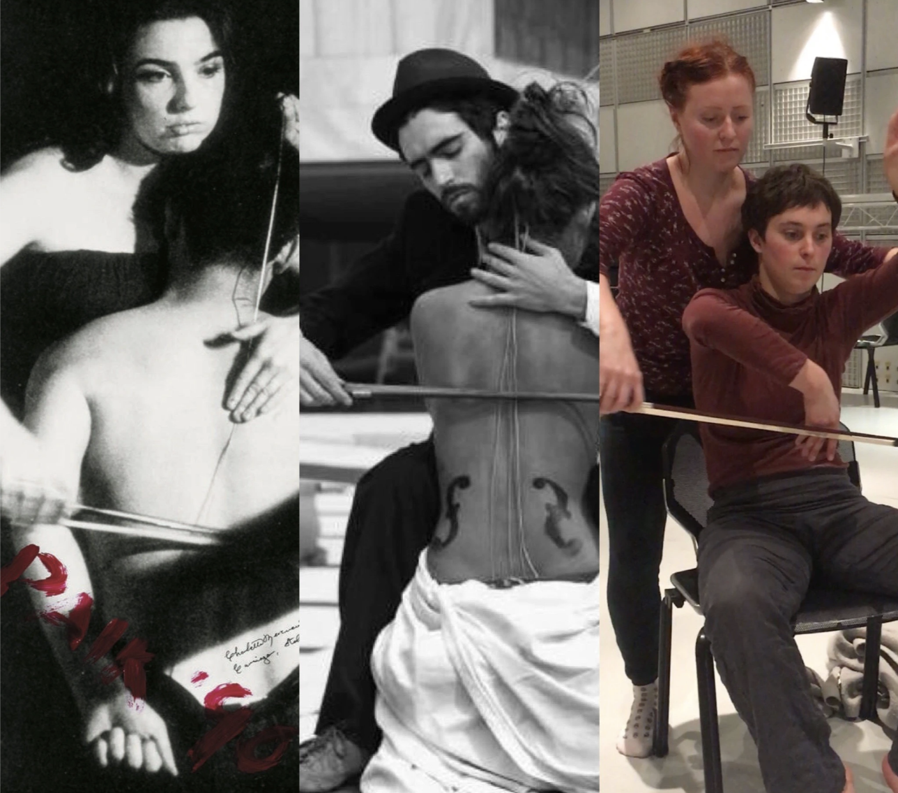
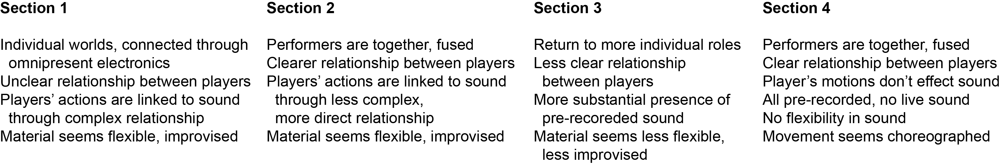

into the inner sublime without sound, just our vibrations without objects, just our vibrations without goals, just our bodies vibrations and projections, echoing inside our bodies, together
So, endings… I’ve gotten into a trend over these past few years of ending pieces by introducing material unrelated to the rest of the work; by writing passages that follow a totally different logic system which forces the audience to abandon all of their previously-held expectations, creating an ending that inspires more head-scratching than applause.
My original idea to end this piece was for the dancer to return back to her chair, and for the cellist approach her with the bow. The dancer would position her body in a cello-like shape, and the cellist would bow the dancer's body as if it were a cello. We tried it. It was ok...

We then tried using the bow in less-literal ways, but this too proved uninspiring, restrictive, and a bit forced. Dancing with an object (especially a cello bow, with all its significance) is always tough, and the image was way too literal (thanks Jeehyun for advising me away from this idea). Polina had some training as a dancer, so eventually we decided to move away from using an object and explored ideas of two performers simply moving together.
With this ending, the audience’s schema of Polina needs to be reconfigured as she moves with Marie. With the exception of entering the stage at the beginning of the performance, Polina has stayed seated, affirming our perception of her role as the ‘cellist’, defined by her instrument and credit in the program booklet. It’s only now that we are confronted with her agency as a mover, and moreover as a dancer as she engages with the other performer without the object that has until now defined her function.
So what is she now? How has her character changed? Has she gone through some sort of transformation? Has her relationship with the other performer changed?
// sidetrack Maybe I should address the elephant in the room: why is the cellist dancing? In past entries, I’ve written at length on my feelings regarding physical performers, that is, musicians who do more than just play their instruments on stage. This might include walking, acting, dancing, etc… Basically, performing in ways that go well beyond their conservatory curricula. While this might seem innovative by the part of the artist, I believe it should be done with extreme caution. We don’t realize how attached musicians are to their instruments (maybe with the exception of singers and percussionists), but once you ask them to behave on stage without the object that defines their role, they demonstrate a different focus, usually breaking their performative character from ‘musician’ to ‘hey-cool-this-is-different’. Most of the time, it doesn't work. Musicians even walk differently without their instrument. And usually, it’s very awkward. If you want comparison, watch an actor or a dancer walk across a stage in character, then watch a (non-singer non-percussionist) musician do the same without their instrument. Study their gaze. Simply put, dancers and actors are taught to be in character while performing, and musicians are not. You can see it in their face, the confidence in their step, their posture. It’s like night and day.
So why did I ask Polina to dance? Why do I even work with dancers? I was never trained in interdisciplinary composition. Aren’t I an amateur choreographer? You’d never ask a choreographer to write music for an orchestra!
The difference, I think, between amateurism and a convincing performance, is the nature of the collaboration and the collaborators. Polina has had training and experience as a dancer. She’s done courses and workshops, studied and critiqued her movements. She wasn’t a tourist. When I work with dancers and choreographers, they check and counter my ideas constantly, and I am always open to their critiques and input. Interdisciplinary work demands that the collaborators be aware, sensitive, humble, and inclusive to the other disciplines. But of course, if amateurism is your thing, go right ahead.
But there’s still another side of this coin: why didn't I give Marie an instrument? To be honest, I haven’t yet worked through this argument. (Very) Reductively speaking, transforming from musician to dancer means the subtraction of an object. Going from dancer to musician means the addition of an object. I think it’s easier to subtract than to add, and I haven’t found a suitable solution for this yet. I have in two instances done projects/sessions where a dancer handles an instrument, but in neither case do they play it like an instrument. They always play it like an quotidian object. Otherwise, it’s like watching your favorite actor trying to play the violin or piano in that one film. You KNOW they don’t know what they’re doing. It's not convincing, usually bordering on cringy. // end of sidetrack
Going back to the piece: as a tool to begin exploring choreographic possibilities, Thierry de Mey (the composer-faculty member at Ircam), suggested that we create a collection of body-images, and focus on finding interesting transitions between them. This way, you can create a fluid network of related shapes and the result will approach something more abstract.
The 4th and final section of the piece begins when the cellist stops playing and puts down her instrument. The music that follows is simply a soundfile that is cued as the cellist releases her last note, fading in with the same pitch and gradually transforming the timbre away from the acoustic world and into the electronic one.
Polina crosses over to Marie, who has already approached a pose that is mildly cello-like. Marie’s hands are folded across her body, with the left hand bent up vertically, and the right held across her stomach. Polina stops behind Marie and calmly places her (Polina’s) hands on her (Marie’s) arms. For a moment, we see the image of the body-cello, though this is quickly lost.

What starts as Polina moving Marie’s right hand like a bow turns into a more abstract bidirectional physical conversation. This choreography was developed through a series of workshops. The performers practiced moving together, changing their rhythms, speeds, and positions. Take a look at the ending:
https://youtu.be/6PVBuPrA0pA?t=7m36s
Like section 2, what is perceived at first as a unidirectional flow of information (the establishment of a clear power structure) gradually breaks down into a complex conversation with both performers simultaneously leading and following. The initial 'cello' image is freely developed to the point where it becomes unrecognizable. We're are alone in the abstract with the performers.
At the end of the piece, they synchronize for the final moment, choreographed with the music. Until this moment, they have been moving independently of the sound, with neither affecting the other. There are two loud bangs in the end: the first signals that the performers raise their hands together, and at the second, they throw their hands down, turning away from the audience as the lights cut to total darkness. We are left with the dark omnipresent, a pre-recorded resonance of breathing and a heartbeat, the human being mimicked and masked by the machine. Finally the sound fades to silence and the performance ends.
Instead of having the performers ‘break’ character to signal the work’s end, I wanted the piece to end with an event triggered from the exterior. I feel this ending is theatrically stronger because it preserves the integrity of the performers’ characters. The performers themselves never visibly break, they retransform under the cover of darkness.
A couple more points I’d like to make before wrapping this up. First, here are the program notes:
a new universe do they know us a tension, an omnipresence a system, flowing
into intimacy / privacy / struggle / hierarchy an energy, intentions flowing through bodies / objects a system, melting into the void
into a space to breathe, move, work, perform do they see us melting into the void
into the inner sublime without sound, just our vibrations without objects, just our vibrations without goals, just our bodies
My goal with this text was to loosely communicate the form and feeling of the work through its 4 sections. I wanted to give the audience a sense of the psychological states of the performers as it changes through the piece. Rather than the form being tied to the sonic or movement material itself, it’s more built on the relationships between the performers themselves, their psychological states, and their relationships between the material and their environment.
As you might imagine, we can break the global form into 4 sections:

While the piece fluctuates between the individual and fused worlds of the performers, there’s a more one-way gradual transition between the performers’ control of the sound, and the eventual severing of this relationship (except for the cadence).
Some concluding thoughts: I’m not sure if I can go back to writing ‘concert pieces’. As a musician, I’m not quite sure what my next steps are. I have grown less and less attracted to the idea of writing music on five lines, or using music stands on stage. I want to play with theatricality and character, with interdisciplinary performers, with expanded performance practices.
I’m excited by projects with interesting collaborators, where I’m not the sole initiator of creative material, where the result is only achievable through uninhibited collective experimentation, unimaginable by the individual. At this moment, I don’t think I’m so concerned with the reproducibility of a project (via making a detailed score), but rather the exploration of the creation process and the moment of performance itself. Of course, this doesn’t excuse making proper documentation of a collaboration via video and/or recordings, and I’m more interested aurally communication than prescriptive notation.
Anyways, my time in Paris has ended (for the moment...), and I’ve moved my hometown of Chicago. One of my projects here is to form a small ensemble of musicians/improvisors/composers and dancers/choreographers to explore long-form interdisciplinary improvisation-based performance with motion-sensitive live electronics. To be continued...